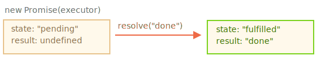
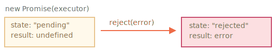

想象一下，你是一位顶尖歌手，粉丝没日没夜地询问你下个单曲什么时候发。
为了从中解放，你承诺（promise）会在单曲发布的第一时间发给他们。你给了粉丝们一个列表。他们可以在上面填写他们的电子邮件地址，以便当歌曲发布后，让所有订阅了的人能够立即收到。即便遇到不测，例如录音室发生了火灾，以致你无法发布新歌，他们也能及时收到相关通知。
每个人都很开心：你不会被任何人催促，粉丝们也不用担心错过单曲发行。
这是我们在编程中经常遇到的事儿与真实生活的类比：
这种类比并不十分准确，因为 JavaScipt 的 promise 比简单的订阅列表更加复杂：它们还拥有其他的功能和局限性。但以此开始挺好的。
Promise 对象的构造器（constructor）语法如下：
let promise = new Promise(function(resolve, reject) {
// executor（生产者代码，“歌手”）
});传递给 new Promise 的函数被称为 executor。当 new Promise 被创建，executor 会自动运行。它包含最终应产出结果的生产者代码。按照上面的类比：executor 就是“歌手”。
它的参数 resolve 和 reject 是由 JavaScript 自身提供的回调。我们的代码仅在 executor 的内部。
当 executor 获得了结果，无论是早还是晚都没关系，它应该调用以下回调之一：
resolve(value) — 如果任务成功完成并带有结果 value。reject(error) — 如果出现了 error，error 即为 error 对象。所以总结一下就是：executor 会自动运行并尝试执行一项工作。尝试结束后，如果成功则调用 resolve，如果出现 error 则调用 reject。
由 new Promise 构造器返回的 promise 对象具有以下内部属性：
state — 最初是 "pending"，然后在 resolve 被调用时变为 "fulfilled"，或者在 reject 被调用时变为 "rejected"。result — 最初是 undefined，然后在 resolve(value) 被调用时变为 value，或者在 reject(error) 被调用时变为 error。所以，executor 最终将 promise 移至以下状态之一：
稍后我们将看到“粉丝”如何订阅这些更改。
下面是一个 promise 构造器和一个简单的 executor 函数，该 executor 函数具有包含时间（即 setTimeout）的“生产者代码”：
let promise = new Promise(function(resolve, reject) {
// 当 promise 被构造完成时，自动执行此函数
// 1 秒后发出工作已经被完成的信号，并带有结果 "done"
setTimeout(() => *!*resolve("done")*/!*, 1000);
});通过运行上面的代码，我们可以看到两件事儿：
executor 被自动且立即调用（通过 new Promise）。
executor 接受两个参数：resolve 和 reject。这些函数由 JavaScipt 引擎预先定义，因此我们不需要创建它们。我们只需要在准备好（译注：指的是 executor 准备好）时调用其中之一即可。
经过 1 秒的“处理”后，executor 调用 resolve("done") 来产生结果。这将改变 promise 对象的状态：

这是一个成功完成任务的例子，一个“成功实现了的诺言”。
现在的则是一个 executor 以 error 拒绝 promise 的示例：
let promise = new Promise(function(resolve, reject) {
// 1 秒后发出工作已经被完成的信号，并带有 error
setTimeout(() => *!*reject(new Error("Whoops!"))*/!*, 1000);
});对 reject(...) 的调用将 promise 对象的状态移至 "rejected"：

总而言之，executor 应该执行一项工作（通常是需要花费一些时间的事儿），然后调用 resolve 或 reject 来改变对应的 promise 对象的状态。
与最初的 "pending" promise 相反，一个 resolved 或 rejected 的 promise 都会被称为 "settled"。
executor 只能调用一个 `resolve` 或一个 `reject`。任何状态的更改都是最终的。
所有其他的再对 `resolve` 和 `reject` 的调用都会被忽略：
```js
let promise = new Promise(function(resolve, reject) {
*!*
resolve("done");
*/!*
reject(new Error("…")); // 被忽略
setTimeout(() => resolve("…")); // 被忽略
});
```
这儿的宗旨是，一个被 executor 完成的工作只能有一个结果或一个 error。
并且，`resolve/reject` 只需要一个参数（或不包含任何参数），并且将忽略额外的参数。```smart header="以 Error 对象 reject"
如果什么东西出了问题， executor 应该调用 reject。这可以使用任何类型的参数来完成（就像 resolve 一样）。但是建议使用 Error 对象（或继承自 Error 的对象）。这样做的理由很快就会显而易见。
````smart header="Resolve/reject 可以立即进行"
实际上，executor 通常是异步执行某些操作，并在一段时间后调用 `resolve/reject`，但这不是必须的。我们还可以立即调用 `resolve` 或 `reject`，就像这样：
```js
let promise = new Promise(function(resolve, reject) {
// 不花时间去做这项工作
resolve(123); // 立即给出结果：123
});例如，当我们开始做一个任务时，但随后看到一切都已经完成并已被缓存时，可能就会发生这种情况。
这挺好。我们立即就有了一个 resolved 的 promise。
```smart header="`state` 和 `result` 都是内部的"
Promise 对象的 `state` 和 `result` 属性都是内部的。我们无法直接访问它们。但我们可以对它们使用 `.then`/`.catch`/`.finally` 方法。我们在下面对这些方法进行了描述。
```
## 消费者：then，catch，finally
Promise 对象充当的是 executor（“生产者代码”或“歌手”）和消费函数（“粉丝”）之间的连接，后者将接收结果或 error。可以通过使用 `.then`、`.catch` 和 `.finally` 方法为消费函数进行注册。
### then
最重要最基础的一个就是 `.then`。
语法如下：
```js
promise.then(
function(result) { *!*/* handle a successful result */*/!* },
function(error) { *!*/* handle an error */*/!* }
);
```
`.then` 的第一个参数是一个函数，该函数将在 promise resolved 后运行并接收结果。
`.then` 的第二个参数也是一个函数，该函数将在 promise rejected 后运行并接收 error。
例如，以下是对成功 resolved 的 promise 做出的反应：
```js run
let promise = new Promise(function(resolve, reject) {
setTimeout(() => resolve("done!"), 1000);
});
// resolve 运行 .then 中的第一个函数
promise.then(
*!*
result => alert(result), // 1 秒后显示 "done!"
*/!*
error => alert(error) // 不运行
);
```
第一个函数被运行了。
在 reject 的情况下，运行第二个：
```js run
let promise = new Promise(function(resolve, reject) {
setTimeout(() => reject(new Error("Whoops!")), 1000);
});
// reject 运行 .then 中的第二个函数
promise.then(
result => alert(result), // 不运行
*!*
error => alert(error) // 1 秒后显示 "Error: Whoops!"
*/!*
);
```
如果我们只对成功完成的情况感兴趣，那么我们可以只为 `.then` 提供一个函数参数：
```js run
let promise = new Promise(resolve => {
setTimeout(() => resolve("done!"), 1000);
});
*!*
promise.then(alert); // 1 秒后显示 "done!"
*/!*
```
### catch
如果我们只对 error 感兴趣，那么我们可以使用 `null` 作为第一个参数：`.then(null, errorHandlingFunction)`。或者我们也可以使用 `.catch(errorHandlingFunction)`，其实是一样的：
```js run
let promise = new Promise((resolve, reject) => {
setTimeout(() => reject(new Error("Whoops!")), 1000);
});
*!*
// .catch(f) 与 promise.then(null, f) 一样
promise.catch(alert); // 1 秒后显示 "Error: Whoops!"
*/!*
```
`.catch(f)` 调用是 `.then(null, f)` 的完全的模拟，它只是一个简写形式。
### finally
就像常规 `try {...} catch {...}` 中的 `finally` 子句一样，promise 中也有 `finally`。
`.finally(f)` 调用与 `.then(f, f)` 类似，在某种意义上，`f` 总是在 promise 被 settled 时运行：即 promise 被 resolve 或 reject。
`finally` 是执行清理（cleanup）的很好的处理程序（handler），例如无论结果如何，都停止使用不再需要的加载指示符（indicator）。
像这样：
```js
new Promise((resolve, reject) => {
/* 做一些需要时间的事儿，然后调用 resolve/reject */
})
*!*
// 在 promise 被 settled 时运行，无论成功与否
.finally(() => stop loading indicator)
*/!*
.then(result => show result, err => show error)
```
不过，它并不是 `then(f,f)` 的别名。它们之间有几个重要的区别：
1. `finally` 处理程序（handler）没有参数。在 `finally` 中，我们不知道 promise 是否成功。没关系，因为我们的任务通常是执行“常规”的定稿程序（finalizing procedures）。
2. `finally` 处理程序将结果和 error 传递给下一个处理程序。
例如，在这儿结果被从 `finally` 传递给了 `then`：
```js run
new Promise((resolve, reject) => {
setTimeout(() => resolve("result"), 2000)
})
.finally(() => alert("Promise ready"))
.then(result => alert(result)); // <-- .then 对结果进行处理
```
在这儿，promise 中有一个 error，这个 error 被从 `finally` 传递给了 `catch`：
```js run
new Promise((resolve, reject) => {
throw new Error("error");
})
.finally(() => alert("Promise ready"))
.catch(err => alert(err)); // <-- .catch 对 error 对象进行处理
```
这非常方便，因为 `finally` 并不是意味着要处理 promise 的结果。所以它将结果传递了下去。
在下一章中，我们将详细讨论 promise 链以及处理程序（handler）之间的结果传递。
3. 最后，但并非最不重要的一点是，`.finally(f)` 是比 `.then(f, f)` 更为方便的语法：无需重复函数 `f`。
````smart header="在 settled 的 promise 上，`then` 会立即运行"
如果 promise 为 pending 状态，`.then/catch/finally` 处理程序（handler）将等待它。否则，如果 promise 已经是 settled 状态，它们就会立即执行：
```js run
// the promise becomes resolved immediately upon creation
let promise = new Promise(resolve => resolve("done!"));
promise.then(alert); // done!（现在显示）
```
请注意，这和现实生活中的类比是不同的，并且比现实生活中的“订阅列表”方案强大得多。如果歌手已经发布了他们的单曲，然后某个人在订阅列表上进行了注册，则他们很可能不会收到该单曲。实际生活中的订阅必须在活动开始之前进行。
Promise 则更加灵活。我们可以随时添加处理程序（handler）：如果结果已经在了，我们的处理程序便会立即获得这个结果。接下来，让我们看一下关于 promise 如何帮助我们编写异步代码的更多实际示例。
我们从上一章获得了用于加载脚本的 loadScript 函数。
这是基于回调函数的变体，记住它：
function loadScript(src, callback) {
let script = document.createElement('script');
script.src = src;
script.onload = () => callback(null, script);
script.onerror = () => callback(new Error(`Script load error for ${src}`));
document.head.append(script);
}让我们用 promise 重写它。
新函数 loadScript 将不需要回调。取而代之的是，它将创建并返回一个在加载完成时解析（resolve）的 promise 对象。外部代码可以使用 .then 向其添加处理程序（订阅函数）：
function loadScript(src) {
return new Promise(function(resolve, reject) {
let script = document.createElement('script');
script.src = src;
script.onload = () => resolve(script);
script.onerror = () => reject(new Error(`Script load error for ${src}`));
document.head.append(script);
});
}用法：
let promise = loadScript("https://cdnjs.cloudflare.com/ajax/libs/lodash.js/4.17.11/lodash.js");
promise.then(
script => alert(`${script.src} is loaded!`),
error => alert(`Error: ${error.message}`)
);
promise.then(script => alert('Another handler...'));我们立刻就能发现 promise 相较于基于回调的模式的一些好处：
因此，promise 为我们提供了更好的代码流和灵活性。但其实还有更多相关内容。我们将在下一章看到。